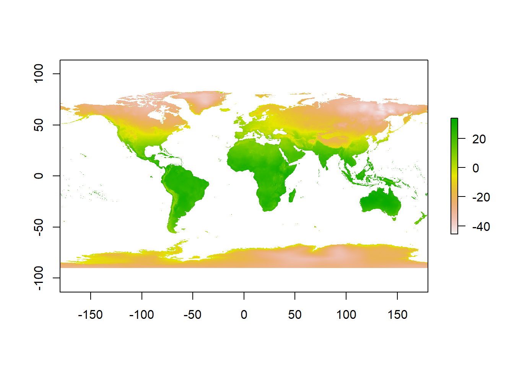
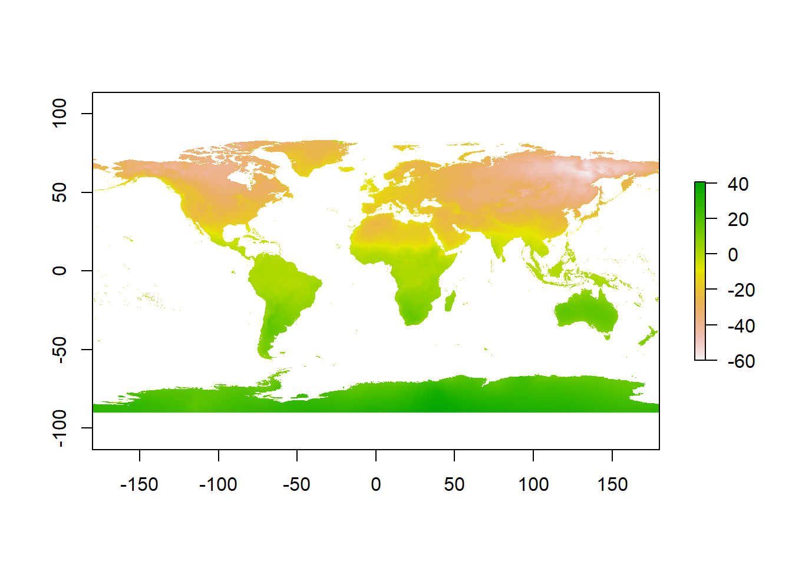
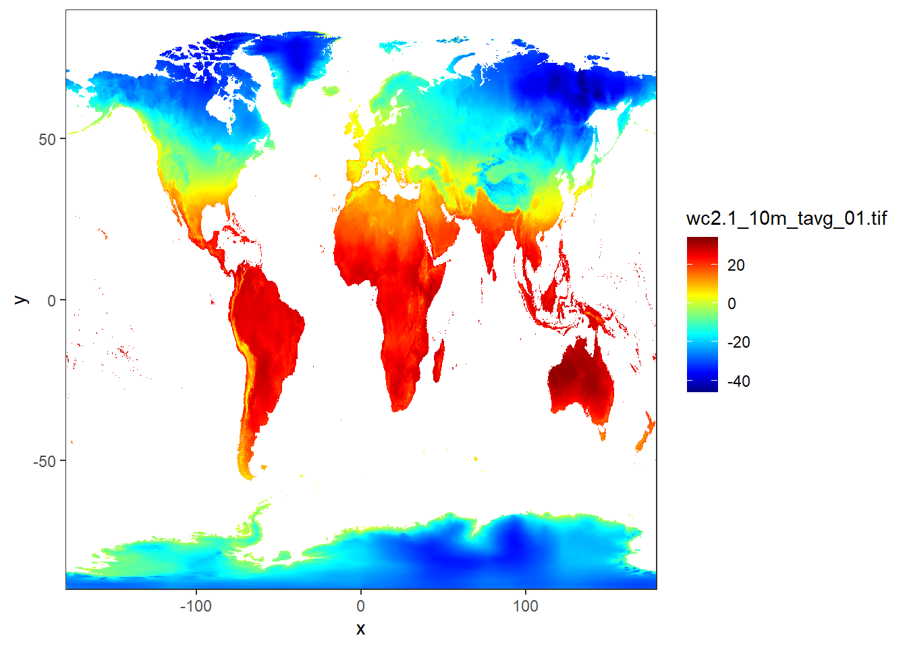
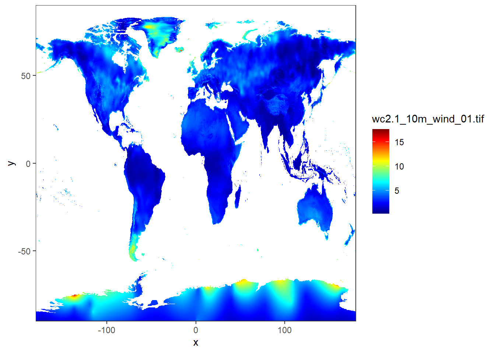

Chapter 12 Working with raster data in R
The two common raster data format widely used in science are .nc and .tiff. R has some dedicated packages for working with these type of raster data. We can use raster (Hijmans 2020), ncdf4 (Pierce 2019), and more to analyze raster data in R.
12.1 NC data
We begin with nc data format. We can use the nc_open() function of ncdf4 package to R to read the metadata of raster data in NC format. Let’s read the metadata of ocean current stored in nc format:
File data/nc/wio_geostrophic_uv_july_2015.nc (NC_FORMAT_CLASSIC):
3 variables (excluding dimension variables):
int crs[]
comment: This is a container variable that describes the grid_mapping used by the data in this file. This variable does not contain any data; only information about the geographic coordinate system.
grid_mapping_name: latitude_longitude
inverse_flattening: 298.257
semi_major_axis: 6378136.3
_CoordinateTransformType: Projection
_CoordinateAxisTypes: GeoX GeoY
int v[lon,lat,time]
_CoordinateAxes: lon lat time lat lon
_FillValue: -2147483647
coordinates: lon lat
grid_mapping: crs
long_name: Absolute geostrophic velocity; meridional component
scale_factor: 1e-04
standard_name: surface_northward_geostrophic_sea_water_velocity
units: m/s
int u[lon,lat,time]
_CoordinateAxes: lon lat time lat lon
_FillValue: -2147483647
coordinates: lon lat
grid_mapping: crs
long_name: Absolute geostrophic velocity; zonal component
scale_factor: 1e-04
standard_name: surface_eastward_geostrophic_sea_water_velocity
units: m/s
3 dimensions:
time Size:31
axis: T
long_name: Time
standard_name: time
units: days since 1950-01-01 00:00:00
_CoordinateAxisType: Time
lat Size:420
axis: Y
bounds: lat_bnds
long_name: Latitude
standard_name: latitude
units: degrees_north
_CoordinateAxisType: Lat
lon Size:401
axis: X
bounds: lon_bnds
long_name: Longitude
standard_name: longitude
units: degrees_east
_CoordinateAxisType: Lon
13 global attributes:
title: NRT merged all satellites Global Ocean Gridded Absolute Dynamic Topography L4 product
institution: CNES, CLS
references: http://www.aviso.altimetry.fr
source: Altimetry measurements
Conventions: CF-1.0
history: Data extracted from dataset http://opendap.aviso.altimetry.fr/thredds/dodsC/dataset-duacs-nrt-over30d-global-allsat-madt-uv
time_min: 23922
time_max: 23952
julian_day_unit: days since 1950-01-01 00:00:00
latitude_min: -74.875
latitude_max: 29.875
longitude_min: 19.875
longitude_max: 119.875This will give us the metadata of this Absolute geostrophic velocity image, where we can see that it has zonal velocity (U) and meridional velocity (V) at each longitude and latitude within the region for 30 days in July 2015, UTM projection, and WGS84 as datum. The metadata is complex, let us make it easy using a tidy format table with the tidync package
Data Source (1): wio_geostrophic_uv_july_2015.nc ...
Grids (5) <dimension family> : <associated variables>
[1] D2,D1,D0 : v, u **ACTIVE GRID** ( 5221020 values per variable)
[2] D0 : time
[3] D1 : lat
[4] D2 : lon
[5] S : crs
Dimensions 3 (all active):
dim name length min max start count dmin dmax unlim
<chr> <chr> <dbl> <dbl> <dbl> <int> <int> <dbl> <dbl> <lgl>
1 D0 time 31 23922 2.40e4 1 31 23922 2.40e4 FALSE
2 D1 lat 420 -74.9 2.99e1 1 420 -74.9 2.99e1 FALSE
3 D2 lon 401 19.9 1.20e2 1 401 19.9 1.20e2 FALSE
# ... with 1 more variable: coord_dim <lgl> Often the tidync gives data in Julian, that is another challenges for people unfamiliar with this date format. Fortunate, R has a a nc2time function from oceanmap package (Bauer 2020), which can turn this complex of julian day into gregorian calender with a single line of code as shown below;
[1] "2015-07-01" "2015-07-02" "2015-07-03" "2015-07-04" "2015-07-05"
[6] "2015-07-06" "2015-07-07" "2015-07-08" "2015-07-09" "2015-07-10"
[11] "2015-07-11" "2015-07-12" "2015-07-13" "2015-07-14" "2015-07-15"
[16] "2015-07-16" "2015-07-17" "2015-07-18" "2015-07-19" "2015-07-20"
[21] "2015-07-21" "2015-07-22" "2015-07-23" "2015-07-24" "2015-07-25"
[26] "2015-07-26" "2015-07-27" "2015-07-28" "2015-07-29" "2015-07-30"
[31] "2015-07-31"12.2 Changing the projection system of a raster file
We can change the projection system of a raster file using the epsg code to wgs84 as follows
raster::raster("data/nc/wio_geostrophic_uv_july_2015.nc", band = 30) %>%
raster::projectRaster(crs = 4326)class : RasterLayer
dimensions : 430, 411, 176730 (nrow, ncol, ncell)
resolution : 0.25, 0.25 (x, y)
extent : 18.5, 121.25, -76.25, 31.25 (xmin, xmax, ymin, ymax)
crs : +proj=longlat +datum=WGS84 +no_defs
source : memory
names : Absolute.geostrophic.velocity..meridional.component
values : -1.6078, 1.3798 (min, max)We can reproject from longitude and latitude to UTM by using the projectRaster() function in the following way
raster::raster("data/nc/wio_geostrophic_uv_july_2015.nc", band = 30) %>%
raster::projectRaster(crs = 32737)class : RasterLayer
dimensions : 598, 672, 401856 (nrow, ncol, ncell)
resolution : 28500, 30700 (x, y)
extent : -1826307, 17325693, 115204.9, 18473805 (xmin, xmax, ymin, ymax)
crs : +proj=utm +zone=37 +south +datum=WGS84 +units=m +no_defs
source : memory
names : Absolute.geostrophic.velocity..meridional.component
values : -1.575943, 1.339576 (min, max)12.2.1 Reading Tiff format
class : RasterLayer
dimensions : 1080, 2160, 2332800 (nrow, ncol, ncell)
resolution : 0.1666667, 0.1666667 (x, y)
extent : -180, 180, -90, 90 (xmin, xmax, ymin, ymax)
crs : +proj=longlat +datum=WGS84 +no_defs
source : E:/bookdown/geoMarine/data/raster/wc2.1_10m_prec/wc2.1_10m_prec_01.tif
names : wc2.1_10m_prec_01
values : 0, 908 (min, max)12.2.1.1 Manipulating raster


12.2.2 Reclassifying rasters

12.2.3 Mapping raster
12.2.3.1 Land surface temperature
12.2.3.2 Land surface wind
jan.wind = stars::read_stars("data/raster/wc2.1_10m_wind/wc2.1_10m_wind_01.tif")
ggplot() +
stars::geom_stars(data = jan.wind)+
coord_cartesian(expand = FALSE)+
scale_fill_gradientn(colours = oce::oce.colors9A(120), na.value = "white")
12.2.3.3 Land surface precipitation
jan.rain = stars::read_stars("data/raster/wc2.1_10m_prec/wc2.1_10m_prec_01.tif")
ggplot() +
stars::geom_stars(data = jan.rain)+
coord_cartesian(expand = FALSE)+
scale_fill_gradientn(colours = oce::oce.colors9A(120), na.value = "white")
12.2.3.4 Land surface evaporation
12.3 Summary
In this chapter, we learned how to load, manipulate, and analyze raster data. The things we have learned here will work as the cornerstone for doing complicated raster analysis tasks, such as applying machine learning algorithms, as we’ll be discussing in later chapters. We learned how to read and load raster data using the raster() function from the raster package in R. For multispectral images, such as Landsat images, we have learned how
12.4 Questions
Now that you’ve completed this chapter, you should be ready to answer the following questions:
- How do you load raster data in R?
- How do you change projections of rasters in R?
- How do you visualize raster in R?
- How do you reclassify rasters in R ?
- How do you clip rasters by vector data?
- How do you sample raster data using points?
References
Bauer, Robert K. 2020. Oceanmap: A Plotting Toolbox for 2D Oceanographic Data. https://CRAN.R-project.org/package=oceanmap.
Hijmans, Robert J. 2020. Raster: Geographic Data Analysis and Modeling. https://CRAN.R-project.org/package=raster.
Pierce, David. 2019. Ncdf4: Interface to Unidata netCDF (Version 4 or Earlier) Format Data Files. https://CRAN.R-project.org/package=ncdf4.